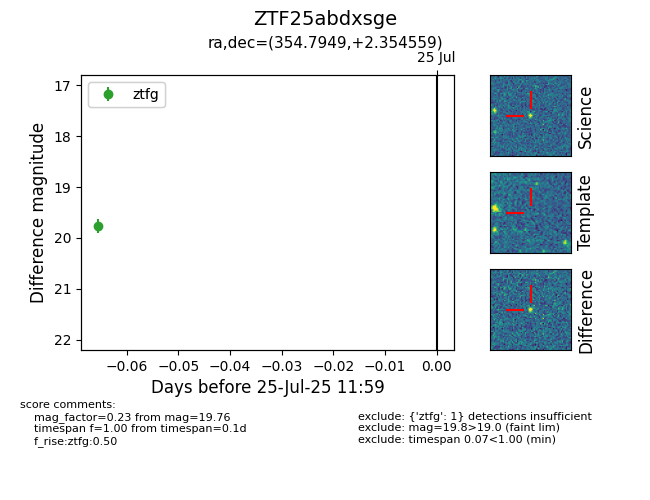

Target ZTF25abdxsge at 2025-07-25 11:59, see:
FINK: fink-portal.org/ZTF25abdxsge
Lasair: lasair-ztf.lsst.ac.uk/objects/ZTF25abdxsge
ALeRCE: alerce.online/object/ZTF25abdxsge
alt names
ZTF25abdxsge (ztf,fink)
coordinates:
equatorial (ra, dec) = (354.7949,+2.35456)
galactic (l, b) = (89.5222,-55.75824)
photometry
last ztfg=19.76
1 ztfg detections
